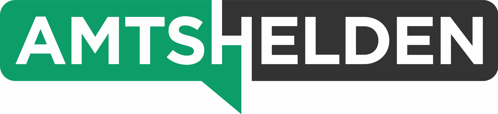

Das Briefing fordert drei Dinge, bevor wir Screens gestalten: Grundstruktur, visuelle Leitidee, Bewegungsidee. Hier ist der erste Aufschlag dazu – mit drei Routen für die Leitidee und einer klaren Empfehlung.
Es gibt kein Eventmaterial. Bühnenfotos wären gelogen, Webinar-Optik wäre zu klein, Metaverse wäre peinlich. Wir müssen also ein Bild für etwas bauen, das man nicht fotografieren kann.
Der Briefing-Satz, an dem alles hängt: „Ein realer Mensch bewegt sich durch eine digitale Veranstaltungswelt.“
Daraus folgt für uns: Die Leitidee darf kein Hero-Bild sein, sondern muss ein System sein, das Startseite, Programm, Speaker und spätere Ausgaben gleichermaßen trägt. Und sie muss mobil funktionieren, weil das Programm das Herzstück wird.
Der Begriff B2G-Event gehört dabei sichtbar in die Positionierung – in Headline-Nähe, im Title-Tag und in der Partner-Ansprache. Er macht in einem Wort klar, für wen das ist und warum Aussteller hier richtig sind.
Jede Behörde kennt es: Flure, Raumnummern, Schilder, „Sie befinden sich hier“. Wir übersetzen genau das ins Digitale. D3 ist ein Gebäude mit Räumen – Raum 01 Keynote, Raum 04 Workshop, Raum 07 Stand – und ein Punkt („Du“) wandert beim Scrollen von Raum zu Raum.
Das Programm wird zum Raumplan bzw. Linienplan: parallele Formate sind parallele Linien. Jede neue D3-Ausgabe ist ein neues „Gebäude“ mit eigener Akzentfarbe.
Der Name liefert die Idee mit: Man taucht ab. Die Website ist ein Abstieg in die Tiefe, die Uhrzeit wird zur Tiefenskala. Jeder Programmpunkt ist eine Ebene, durch die man beim Scrollen hindurchfährt – vom Get-together an der Oberfläche bis zur Abschluss-Keynote ganz unten.
Der reale Mensch erscheint als ausgeschnittene Figur, die durch die Ebenen „fällt“.
Die Teilnehmer sitzen vor ihrem Rechner – also wird das Interface selbst zur Architektur. Fenster öffnen sich wie Räume, ein realer Mensch (Foto-Shooting, freigestellt) steigt von Fenster zu Fenster: Vortrag, Breakout, Workshop, Stand.
Formal reduziert, mit harten Kanten und Schlagschatten – eher Editorial als Tech-Konferenz.
Der Raumplan ist die einzige Idee, die gleichzeitig Key Visual, Navigation und Programm ist. Genau das verlangt das Briefing: eine zentrale Idee statt vieler Effekte. Aus Route C nehmen wir den realen Menschen mit – er bewegt sich durch die Räume des Plans.
Ein Marker begleitet den User durch die ganze Seite. Er steht für die Teilnehmerin, die sich durch den Tag bewegt. Im Header läuft er durch die Räume, im Programm markiert er „jetzt“, auf Speaker-Seiten zeigt er den Raum.
Raumnummern, Schilder, Linien in Schwarz/Weiß tragen die Seite. Dazu eine reale Person, freigestellt fotografiert in wenigen Posen (zuhören, sprechen, notieren, Hand geben). Keine Menge, keine Bühne.
Jeder Sektionswechsel ist ein Raumwechsel: Schild klappt um, Marker wandert, Raumnummer zählt hoch. Eine Bewegungsart, konsequent durchgezogen. Mobil als einfacher vertikaler Pfad.
Das Amtshelden-Logo besteht aus zwei Boxen, eine davon mit Sprechblasen-Spitze. Das ist die Systematik, die wir weiterdrehen: Das Format bekommt eine eigene Box, der Absender bleibt klein darüber.
Regel: Formatkürzel in der Box + Ausgabe als Unterzeile. D3 heute, D3 Kommunikation morgen, und dieselbe Logik für andere Amtshelden-Formate (z. B. Connected). Kein neues Corporate Design – eine Schablone, die man in fünf Minuten neu befüllt.

Grobe Skizze zur Logik, nicht zur Form. Farben: Schwarz/Weiß als Basis, pro Ausgabe eine Akzentfarbe. Das Amtshelden-Grün bleibt im Absender.
Deine vorläufige Struktur passt. Ich würde sie nur anders schneiden: Programm, Keynotes, Masterclasses und Cases sind keine getrennten Seiten, sondern Filter auf dasselbe Programm. Das spart Pflege und macht das Programm zum Zentrum.
Damit beantworten wir die offenen Fragen aus dem Briefing strukturell: Die Startseite zeigt immer das nächste Event, weitere Termine stehen als Leiste darunter, vergangene Ausgaben werden zum Archiv. Speaker und Cases leben ausgabenübergreifend – und können per Link oder Teaser zu Podcast, Artikel oder Interview auf amtshelden.de führen.
Keine Tabelle. Die Zeit läuft vertikal, parallele Formate liegen als wischbare Reihe nebeneinander. Farbe zeigt das Format, der Raum-Code (aus Route A) gibt jedem Punkt eine Adresse.
Damit sind die fünf Fragen aus dem Briefing auf einen Blick beantwortet: Was läuft wann, was parallel, welches Format, wer spricht, wohin für mehr.